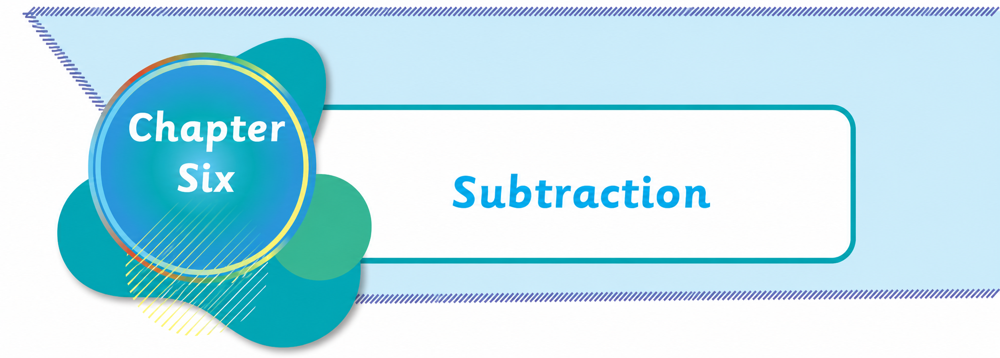

Subtracting numbers not exceeding 999
Numbers can be subtracted horizontally or vertically. Subtraction is done by considering the place value of each digit in a number.
Subtracting numbers horizontally without regrouping
Numbers are subtracted starting from the right to the left.
Example
247 minus 123
Solution. Place-value table. Hundreds, tens, ones. Two hundred and forty-seven minus one hundred and twenty-three equals one hundred and twenty-four. Hundreds are matched with hundreds, tens with tens, and ones with ones.